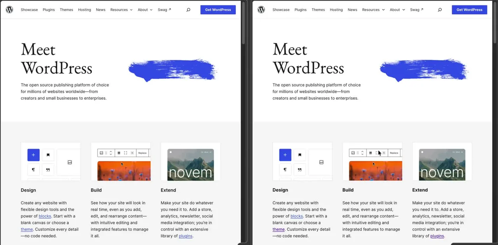
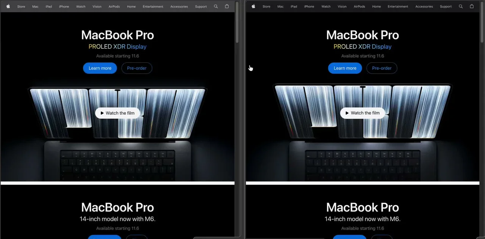

WordPress.org → Grav
From the front page to editable sections, content and media.
One URL. Hello, Grav.
Give Codex or Claude Code a website. Get a local, editable Grav 2 site with the same routes and content, a matching theme, and forms that work.
Paste this prompt into Codex:
$skill-installer Install anysite2grav from https://github.com/w00fz/anysite2grav/tree/main/skills/anysite2grav
Then use $anysite2grav. Official install guidance.
Clone a working copy, then link the skill:
git clone https://github.com/w00fz/anysite2grav.git ~/Projects/anysite2grav mkdir -p ~/.agents/skills ln -s ~/Projects/anysite2grav/skills/anysite2grav ~/.agents/skills/anysite2grav
Update this working copy with git pull.
Run these inside Claude Code:
/plugin marketplace add w00fz/anysite2grav /plugin install anysite2grav@anysite2grav
Update with /plugin marketplace update anysite2grav.
git clone https://github.com/w00fz/anysite2grav.git ~/Projects/anysite2grav mkdir -p ~/.claude/skills ln -s ~/Projects/anysite2grav/skills/anysite2grav ~/.claude/skills/anysite2grav
Ask Claude to convert a site to Grav. Update with git pull.
Load skills/anysite2grav/ in any agent that supports Agent Skills. Or point your agent at its SKILL.md for the workflow, scripts and references.
The repository is currently private. Installation needs GitHub read access to w00fz/anysite2grav.
Choose a starting point
See the rebuild
Watch two familiar websites rebuilt in Grav. Then step inside the Admin, with content fields shaped around each page.
Playback is unavailable. Open the showcase video directly.
Two complete walkthroughs

From the front page to editable sections, content and media.

From product heroes to custom fields and editable galleries.
Bring the design. Keep creating in Grav.
The showcase opens with two independent rebuild demos. First, the WordPress.org homepage is scrolled beside its Grav recreation. Then, the Apple.com menu is opened in both versions. Playback timing is aligned between the panes. The view moves into Grav Admin: content and media fields for the WordPress.org rebuild, custom page fields for the Apple.com rebuild, and repeatable gallery items. It ends with “Looks like your site. Works like your CMS.”
From URL to handoff
Your agent follows 13 checkpoints. You review the important choices; scripts handle the repetitive work.
Install Grav + Admin2. Connect the API and MCP before building.
Crawl routes. Audit content, forms, trackers, fonts and languages.
Choose styling, form delivery and analytics with suggested defaults.
Create pages, import media, match the theme and wire up forms.
Check every route, viewport and interaction state against the source.
Get an editable site, verification reports and a connected agent.
The result
Your content becomes a real Grav site: pages you can edit, a theme you control, and an agent that can keep working.
Content, titles, meta and Open Graph tags. Images and PDFs, deduplicated. Languages and redirects preserved.
/about/about/contact/contactA standalone theme from measured source styles, with dedicated modules and blueprints, exact spacing and responsive interaction states. Header, menus, CTAs and footer editable in Admin. Tailwind or built-in CSS: your choice.
Inline or popup forms that save, email or send to a webhook. Choose your CAPTCHA or keep the original embed.
Admin2, REST API and MCP connected from the start. Keep editing through Admin or your agent, with secrets stored locally.
Crawl, build and check in batches. Compact reports keep bulk data out of your agent’s context.
Carry page titles, descriptions, social tags and redirects into Grav.
Load approved trackers on your chosen live hosts. Keep local and preview traffic out.
Mark non-production copies as noindex so search engines know not to index them.
Use Grav’s translation model or keep a separate page tree for each language.
Start with PHP’s built-in server, or use Docker for a repeatable local setup.
DESIGN.mdKeep styling choices documented so the next edit starts with context.
Less busywork. More of your site.
Reusable scripts keep bulk work out of the conversation. SEO details remain part of the migration, from the first route to the final check.
Code-mode efficiency
One script call can crawl or rebuild many pages. HTML, media and extracted content stay in local files; compact reports tell your agent what to inspect next. That keeps repetitive work in code and bulk data out of the context window.
SEO comes with you
Preserve URLs, page titles, descriptions and social tags. Rebuild canonical and language links, keep source redirects, and carry existing structured data into the matching templates.
/your-page/your-pageYour original description, editable in Grav. The same content at the right URL.
Route checks surface content and redirect gaps. Sitemaps and robots rules are part of the workflow; local and preview copies stay out of search with noindex.
Built for the next edit
Long pages become modules, each with its own Admin form and media. Edit a hero, reorder a section or hide a form without rebuilding the whole page.
Your live page
Your editable Grav page
Articles stay in Markdown. Shared sections are stored once; popups don't count toward the threshold. Adjust it with --modular-threshold or use --modular off.
Grounded in Grav
Patterns from Grav’s official Quark2 theme help keep the result easy to extend. Your source styles, content and section order still lead the way.
Focused Twig blocks and a separate custom stylesheet make the next change smaller. Explore official Quark2
Compare. Refine. Repeat.
The first pass is a draft. Finish a representative page, then compare each design family against the source: exact layout and styles, working features, and content you can edit.
Source website
Local Grav site
Route and text coverage alone do not establish fidelity. Required controls must work, plugin output must match the design, and unresolved differences keep the result incomplete. Screenshot scores are triage hints, not fidelity percentages.
For the curious
The workflow is explicit, the scripts are rerunnable, and the important choices stay yours.
Each stage has a check before the next begins. Your custom fixes stay in rerunnable migration/fixups/ scripts. You decide when the visual match is close enough.
PHP's built-in server by default, Docker + Mailpit, or Valet / Herd / MAMP. Choose the folder and clients: Codex, Claude Code, Cursor or another agent. Global client config changes require your approval.
Name your theme. Choose Tailwind 4 for ongoing design work or plain CSS with tokens before detailed styling begins. DESIGN.md records the decisions.
Native Grav multilang when hreflang maps translations, or separate trees per language prefix. Titles, descriptions, Open Graph and language tags come across.
Save to user/data, send through SMTP, use a webhook or keep an embed. Choose an inline message or redirect. The message reflects what actually happens.
Grav's built-in Cap is the default: self-hosted, invisible and no keys required. Turnstile and reCAPTCHA are alternatives.
Port on production hosts only, add consent gating, retain selected tags or drop them. Local and preview traffic stays out of production analytics.
~/Sites/example-grav/ ├── grav/ │ └── user/ # pages, theme, config and media │ ├── pages/ │ │ ├── 01.home/ # modular page + individual sections │ │ └── 02.about/ │ ├── themes/ │ └── media/ ├── migration/ # crawl, audit, reports, screenshots │ └── fixups/ # your rerunnable custom changes ├── .local/ # credentials, never committed ├── bin/grav-mcp # launcher reads the key at startup └── .mcp.json # project MCP configuration
Scripts write the bulk; Admin and MCP handle later edits. The page tree is generated on disk. Later agent edits use the API with conflict checks. Theme rebuilds preserve your settings and custom CSS; replacing them requires an explicit reset flag. Shared sections are stored once. Distinct source compositions get dedicated page or module templates with matching blueprints and named Admin fields.
Only grav/user needs a Git repository, if you choose one. Accounts, submissions, credentials and caches are excluded. Local credential files use restrictive permissions; agent configurations point at the launcher rather than containing a key.
Python uses its standard library; PHP uses Grav's YAML parser. Node runs MCP and, when needed, Tailwind or Playwright. Each script has --help.
| Script | Purpose |
|---|---|
install_grav.sh | Latest Grav + Admin2, PHP and extension checks. |
bootstrap_access.sh | Admin, API key and MCP launcher. Reuses credentials unless rotation is requested. |
crawl_site.py | Sitemaps, crawl, cached HTML, redirects, languages and PDFs. |
audit_site.py | Trackers, forms, embeds, code, fonts and palette. |
extract_content.py | Sections, blocks, shared content, site navigation and layout groups. |
import_media.py | Download once, deduplicate and assign page or shared media. |
measure_layout.mjs | Real layout of each source section: splits, columns, cards per row, type scale, fonts, header colors. |
build_pages.py | Page tree, modules, collections, frontmatter, languages, provenance and redirects. |
scaffold_theme.py | Standalone theme, source CSS and design tokens, optional Tailwind. |
build_forms.py | Form plan, Grav Form pages and CAPTCHA setup. |
capture_pages.mjs | Source and local screenshots, computed styles and section measurements. |
compare_components.mjs | Paired geometry, CSS, pseudo-elements and UI states with full-color screenshots. |
verify_parity.py | Route, content, media, forms, SEO and analytics checks. |
grav_config.php | Read, merge and lint YAML using Grav's parser. |
Extensions: curl ctype dom gd json mbstring openssl session simplexml xml zip. Recommended: intl yaml apcu opcache. Docker brings its own runtime.
Standard library only. No pip installation for crawling, extraction or page building.
For Grav MCP, Tailwind and Playwright. Installed as needed inside the migration project.
Install the skill. Bring a website. Make it yours in Grav.